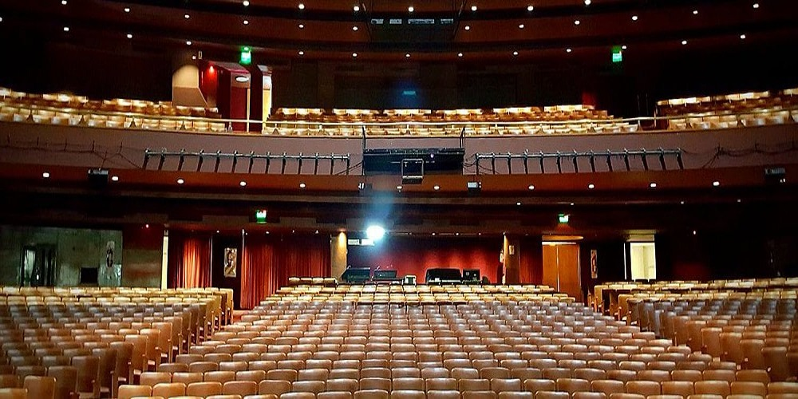

El Míster y los Marsupiales Extintos
La cuenta oficial del Indio Solari sorprendió a sus fanáticos con nuevo material musical en su proyecto llamado El Mister y los Marsupiales Extintos. El músico presentó tres canciones que alegraron a los seguidores alrededor del país y que ya están disponibles en su canal de YouTube.a cuenta oficial del Indio Solari sorprendió a sus fanáticos con nuevo material musical en su proyecto llamado El Mister y los Marsupiales Extintos. El músico presentó tres canciones que alegraron a los seguidores alrededor del país y que ya están disponibles en su canal de YouTube.
A pesar de haber anunciado su retiro de los escenarios en febrero de este año a causa de su enfermedad, el artista estrenó nueva música tras siete meses sin hacerlo y la sequía la terminó con tres nuevas canciones que revolucionaron las redes sociales. “Novedades obsoletas del Kamarada Amor”, “Falta tan poco para nada” y “Cantar de la mala salud”, son las tres canciones que el público ya puede disfrutar en YouTube en el canal llamado “Indio Solari Oficial”.
Venta de Entradas: Espectáculos:
La temporada teatral de verano en las tres plazas principales parece ser que ya tiene nombres definidos. Así como la producción de Disney viene acaparando la mayor cantidad de público en Buenos Aires, la camaleónica de Fátima Florez no suelta el liderazgo desde que inició su temporada en Mar del Plata y la comedia que protagonizan Pedro Alfonso y Paula Chaves afianza su liderazgo en Villa Carlos Paz. En la Ciudad de Buenos Aires, La caja mágica, la producción de Disney, sigue en el primer lugar en el ranking de las cinco propuestas con mayor cantidad de espectadores y de mejor recaudación en función de datos estadísticos de la semana pasada. La obra se presenta en el teatro Ópera, la sala ubicada frente al Gran Rex en donde está haciendo la temporada de despedida Matilda, la comedia musical en la que actúan Laurita Fernández, Agustín “Soy Rada” Aristarán y José María Listorti, entre otros; ese gran montaje es el que se ubica segundo en función de la preferencia de público. El podio se completa con otro verdadero tanque como es Tootsie, la comedia que protagonizan Nicolás Vázquez y Julieta Nair Calvo, que se presenta en el Lola Membrives. En el cuarto aparece un espectáculo que, como el anterior, está en otro sector de la avenida Corrientes: se trata de Moldavsky/Lo mejor de mí, la propuesta de Roberto Moldavsky, que está haciendo funciones en el Apolo.
La Renga En Racing
Con la presencia de Divididos como invitado especial, que ocupó el escenario para interpretar su tema "Ala delta", La Renga cerró en la noche del pasado sábado su serie de cuatro shows a lleno total en la cancha de Racing de Avellaneda, que marcó su regreso al Área Metropolitana de Buenos Aires (AMBA) a más de seis años de su último concierto en Huracán. El recital que puso el broche de oro a la histórica saga fue sorpresivamente transmitido en vivo por el canal oficial de YouTube de la banda, aunque una vez finalizado fue retirado de la página. El concierto tuvo en un primer momento como invitado a Ricardo Mollo en el tema "La balada del diablo y la muerte" y, luego, se sumaron sus compañeros de Divididos Diego Arnedo y Catriel Ciavarella, quienes quedaron solos en el escenario para interpretar su clásico "Ala delta". Cabe recordar que en mayo pasado, cuando Divididos se presentó en Vélez, cedió en un momento de los bises el espacio a La Renga para que pudiera romper con el impedimento oficial de actuar en la Ciudad de Buenos Aires. Por ese motivo, la presencia de Divididos y la posibilidad de que interprete una canción significó una devolución de gentilezas.